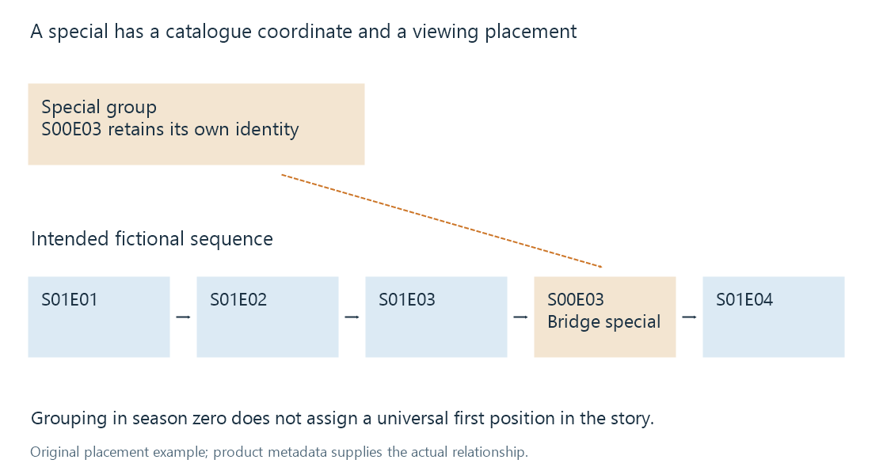

Television specials
A television special has its own episode identity whose catalogue grouping can differ from its intended position among regular episodes.
A special is episodic material that a catalogue groups outside the regular season sequence. It can be an introductory programme, a holiday story, a bridge between seasons or a retrospective.
Many television catalogues use season zero for such entries. That provides a place to identify and browse them. It does not mean every special should be watched before season one.
Identity and placement are two coordinates
In this fictional example, special S00E03 belongs between regular episodes S01E03 and S01E04:

The special's identity is its entry in the special group. Its placement is a relationship to the regular sequence. Sorting solely by season number places the whole special group first; sorting solely by E03 could mix unrelated groups. Neither rule captures the illustrated placement.
Emby's special-ordering documentation describes metadata that can position specials relative to regular seasons and episodes. This separates their catalogue identity from the timeline in which they should appear. The exact available behavior depends on the represented metadata and app.
| Special role | A plausible viewing placement | What its number alone establishes |
|---|---|---|
| Introductory programme | Before the regular story begins | Its coordinate within the chosen special group |
| Bridge episode | Between two regular seasons | The same limited grouping coordinate |
| Holiday story | Within an existing season's sequence | No universal holiday/date placement |
| Retrospective | After the relevant stories | No guarantee of spoiler-safe order |
These are illustrative placements, not provider-assigned rules for all specials.
A catalogue special is not every extra
A making-of video can be a numbered episode in a provider's catalogue, or it can be a local supplementary resource without such an episode record. Both are useful ways to describe it, but they have different identity evidence.
Assigning an arbitrary special number does not establish that the provider uses the same number. A later metadata match could resolve to an unrelated programme if the coordinate and catalogue disagree.
The local title and role remain important. A resource called The Making of Night Signal describes a documentary about an episode; it is not necessarily another cut of that episode.
Placement affects continuation
If a viewer finishes S01E03, an intended sequence that includes the bridge special may choose S00E03 before S01E04. A sequence excluding supplementary material can choose the regular episode directly. The difference is a selection policy, not a change to the special's identity.
Watched state adds another dimension: a special already seen by this user can be handled differently from an unseen one. That is why next-episode selection needs catalogue order, availability and user state together.